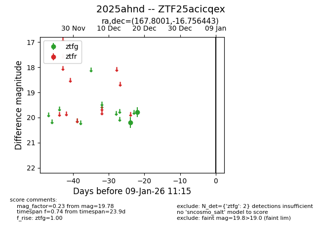
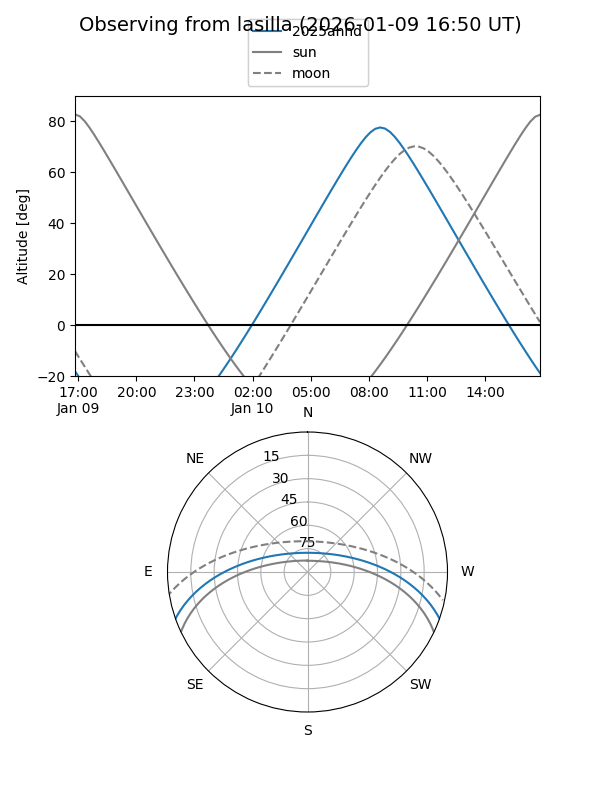
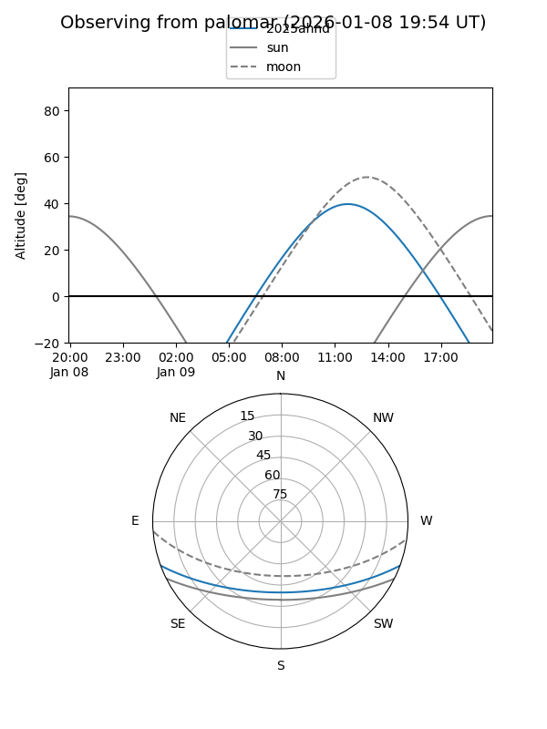

2025ahnd
Target 2025ahnd at 2025-12-20 14:04
Aliases and brokers:
FINK: fink-portal.org/ZTF25acicqex
Lasair: lasair-ztf.lsst.ac.uk/objects/ZTF25acicqex
ALeRCE: alerce.online/object/ZTF25acicqex
TNS: wis-tns.org/object/2025ahnd
YSE: ziggy.ucolick.org/yse/transient_detail/2025ahnd
alt names
ZTF25acicqex (ztf,fink_ztf)
2025ahnd (tns,yse)
Coordinates:
equatorial (ra, dec) = 167.8001,-16.75644
equatorial (HMS+DMS) = 11:11:12.02,-16:45:23.20
galactic (l, b) = (271.0528,+39.83048)
Flags:
Photometry:
last ztfg=19.78
2 ztfg detections
Lightcurve

Visibility


Additional plots